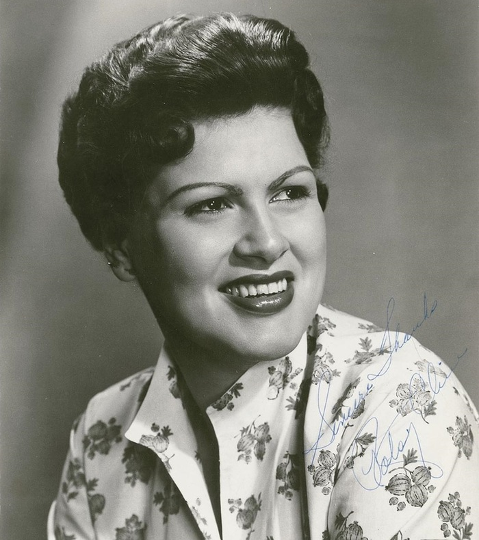

1961 music gave Motown its first Billboard number one, Please Mr. Postman by The Marvelettes.
Bobby Lewis's Tossin' and Turnin' held the top spot longest, seven straight weeks that summer, while 21 other singles took a turn at number one across the year.
Listen to 1961 Music
Three songs already covered on this site trace straight back to 1961, one from each of the genre shifts below.
Please Mr. Postman, The Marvelettes
I Fall to Pieces, Patsy Cline
Moon River, Henry Mancini

Table of Contents
- Listen to 1961 Music
- 1961 Music's Billboard Hot 100 Number Ones
- Key Albums Released in 1961
- Notable Events in 1961
- Genre Shifts in 1961 Music
- Play 1961 on the Radio Dial
- FAQ
1961 Music's Billboard Hot 100 Number Ones
Twenty-two different singles topped the Billboard Hot 100 during 1961, counting one holdover from the final week of 1960.
Bobby Lewis's Tossin' and Turnin' was the runaway champion, spending seven weeks at number one that July and August.
Novelty and spoken word records did well too, from Jimmy Dean's talking Big Bad John to The Marcels' doo wop revival Blue Moon.
The year closed with two firsts back to back, Motown's breakthrough and The Tokens' The Lion Sleeps Tonight.
| Title | Artist | Chart | Peak Date | Weeks at #1 |
|---|---|---|---|---|
| Are You Lonesome Tonight | Elvis Presley | Billboard Hot 100 | Jan 2, 1961 | 1 (holdover from 1960) |
| Wonderland by Night | Bert Kaempfert | Billboard Hot 100 | Jan 9, 1961 | 3 |
| Will You Love Me Tomorrow | The Shirelles | Billboard Hot 100 | Jan 30, 1961 | 2 |
| Calcutta | Lawrence Welk | Billboard Hot 100 | Feb 13, 1961 | 2 |
| Pony Time | Chubby Checker | Billboard Hot 100 | Feb 27, 1961 | 3 |
| Surrender | Elvis Presley | Billboard Hot 100 | Mar 20, 1961 | 3 |
| Blue Moon | The Marcels | Billboard Hot 100 | Apr 3, 1961 | 3 |
| Runaway | Del Shannon | Billboard Hot 100 | Apr 24, 1961 | 4 |
| Mother-in-Law | Ernie K-Doe | Billboard Hot 100 | May 22, 1961 | 1 |
| Travelin' Man | Ricky Nelson | Billboard Hot 100 | May 29, 1961 | 2 |
| Running Scared | Roy Orbison | Billboard Hot 100 | Jun 5, 1961 | 1 |
| Moody River | Pat Boone | Billboard Hot 100 | Jun 19, 1961 | 1 |
| Quarter to Three | Gary U.S. Bonds | Billboard Hot 100 | Jun 26, 1961 | 2 |
| Tossin' and Turnin' | Bobby Lewis | Billboard Hot 100 | Jul 10, 1961 | 7 |
| Wooden Heart | Joe Dowell | Billboard Hot 100 | Aug 28, 1961 | 1 |
| Michael | The Highwaymen | Billboard Hot 100 | Sep 4, 1961 | 2 |
| Take Good Care of My Baby | Bobby Vee | Billboard Hot 100 | Sep 18, 1961 | 3 |
| Hit the Road Jack | Ray Charles | Billboard Hot 100 | Oct 9, 1961 | 2 |
| Runaround Sue | Dion | Billboard Hot 100 | Oct 23, 1961 | 2 |
| Big Bad John | Jimmy Dean | Billboard Hot 100 | Nov 6, 1961 | 5 |
| Please Mr. Postman | The Marvelettes | Billboard Hot 100 | Dec 11, 1961 | 1 |
| The Lion Sleeps Tonight | The Tokens | Billboard Hot 100 | Dec 18, 1961 | 2 |
Motown's First Number One
No single moment mattered more to 1961 music than Please Mr. Postman.
It was The Marvelettes' debut single for Motown's Tamla label.
The song entered the Hot 100 that September and climbed to number one that December.
It gave Motown founder Berry Gordy his first pop chart topper, four years into building the label.
Key Albums Released in 1961
Album releases in 1961 leaned toward vocal jazz, soundtrack scores and country breakthroughs more than rock and roll.
- Judy at Carnegie Hall, Judy Garland (Capitol Records, released July 1961): a live double album that became the first live record ever to reach number one on Billboard's album chart, that September.
- Breakfast at Tiffany's, Henry Mancini (RCA Victor, released 1961): the film score built around Moon River, which went on to win the Academy Award for Best Original Song in 1962.
- Showcase, Patsy Cline (Decca Records, released 1961): her first album for Decca, built around I Fall to Pieces and produced by Owen Bradley.
A Year of Vocal Albums
Judy Garland's Carnegie Hall recording was a turning point for the album format itself.
Until then, live albums were seen as a lesser format next to a studio record.
Its run at number one proved a live performance could be a genuine event on its own.
Notable Events in 1961
Beyond the chart, a few 1961 sessions still shape how the year gets remembered.
- Please Mr. Postman debuted on the Hot 100 on September 4, 1961, months before it reached number one that December. Read more on September 4
- Bob Dylan cut his first professional recording session that September, signing to Columbia Records days later.
Genre Shifts in 1961 Music
Please Mr. Postman did more than top the charts.
It opened the door for Motown and soul to compete directly with pop and rock and roll for number one.
Within a few years the label would turn that single breakthrough into a hit making machine.
Patsy Cline had her own breakthrough year in country music.
I Fall to Pieces, released that January, became her first number one country hit.
She also recorded Crazy that year, a Willie Nelson composition that went on to peak in 1962.
Both records leaned on lush strings and pop production, a hallmark of the Nashville Sound.
Hollywood's Pop Crossover
Moon River showed how far a film score could travel into pop culture.
Henry Mancini and Johnny Mercer wrote it for Breakfast at Tiffany's, released that September.
It became a top 40 single in its own right, part of the jazz and easy listening sound that still shared the radio dial with rock and roll in 1961.
Play 1961 on the Radio Dial
Hear 1961 music the way listeners did, back to back and unscripted.
The site's own Play 1961 on the Radio Dial tunes every station to songs from this year alone.
FAQ
What was the number one song of 1961?
Bobby Lewis's Tossin' and Turnin' spent the most weeks at number one in 1961.
It held the top spot for seven weeks that July and August, longer than any other single that year.
What was Motown's first number one hit?
Please Mr. Postman by The Marvelettes became Motown's first Billboard Hot 100 number one.
It reached the top on December 11, 1961, four years after the label's founding.
What Patsy Cline songs came out in 1961?
Patsy Cline released I Fall to Pieces in January 1961, her first number one country hit.
She also recorded Crazy, written by Willie Nelson, that same year.
When did Moon River come out?
Moon River was released as a single in September 1961.
Henry Mancini and Johnny Mercer wrote it for Breakfast at Tiffany's, and it won the Academy Award for Best Original Song in 1962.
What kind of music was popular in 1961?
1961 mixed teen idol pop with novelty and spoken word hits like Big Bad John.
Doo wop revivals, Nashville Sound country, and Motown's first soul crossover all shared the chart too.
1961 turned out to be a year of firsts.
Motown broke through, Patsy Cline found her signature sound, and a film score crossed all the way into the top 40.
Explore how those threads played out across the whole decade on the 1960smusic.net homepage.
It is the best place to dig deeper into 1961 music.